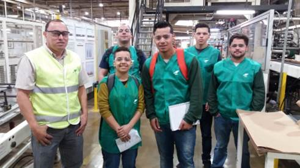

É a área responsável por todas as partes do processo de fabricação dos sacos industriais.
Processo:
Ordens de serviços (OS), Setup e Pré-setup:
OS: são os comandos para execução do processo, dado pelo PCP.
Setup: São as configurações de ajuste da máquina
Pré-setup: são as organizações para fazer o setup
Quadro de setup.
Armazém:
Local de armazenagem das bobinas de papel;
Organização;
Localização;
Solicitação;
Retorno de sobras.
Rebobinadeira:
Transforma bobinas maiores em menores, mais usadas para formar os patch
Patch:
Papel para reforçar o fechamento do saco industrial;
Impressora:
imprime no papel o desenho, de acordo com a OS.
Tubeiras:
São as maquinas que juntam o papel com o PAD, fura, corta e cola, para formar o saco, passa pelo destacador e é encaminhado para mesa formadora, e vai para o próximo processo.
PAD: Película de plástico para proteção do que vai dentro do saco.
Perfurações: São necessárias para vazão de ar, do saco. Usado um rolo com furos específicos para cada tipo de saco.
Corte e colas: Usa facas e colas especificas para cada tipo de saco.
Alinhador: Deixa o papel e o PAD alinhado.
Destacador: Verifica a gramatura do papel, os bons vão para mesa formadora.
Mesa formadora: Encaminha para a próxima máquina.
Coladeira:
Está no meio da tubeira, ela quem cola o saco e fixa o Patch;
Transtower:
Armazena os sacos, até secar e ser solicitado (nem todas as máquinas possuem).
Costura:
Os sacos que não usam cola, são costurados.
Arcomat:
Faz a seleção dos maços e faz os paletes;
Paletes:
são as junções de vários sacos em uma base de madeira.
Prensa:
Faz o fechamento dos paletes com uma película de plástico.
Secador:
Vai secar os papeis, deixando no nível de umidade correto.
Estoque e despache:
Quando prontos ficam na área de estoque para serem carregadas e despachadas.
Grupo responsável:

Cristoffer George Avila
Dayan Pereira dos Santos
Gustavo Lima Rosa
Lian Sulli Correa Maciel
Roger de Castro Palhano